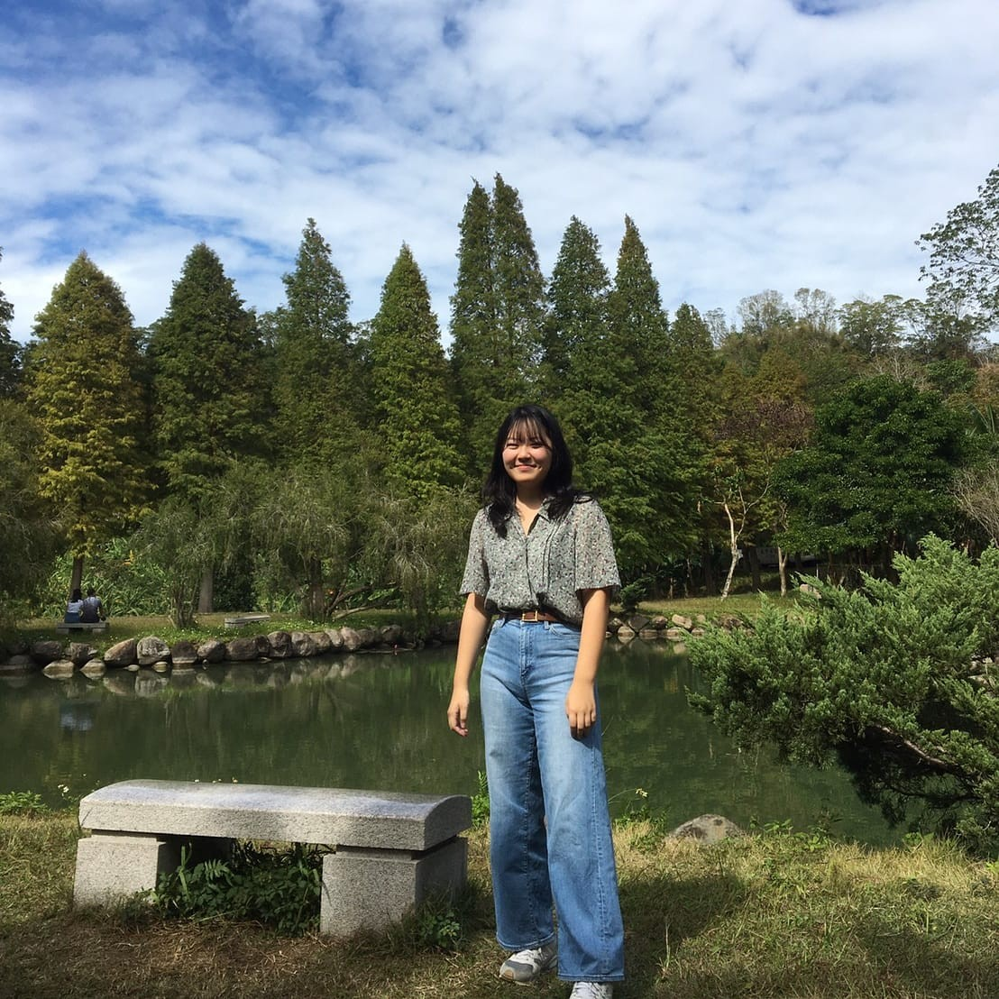
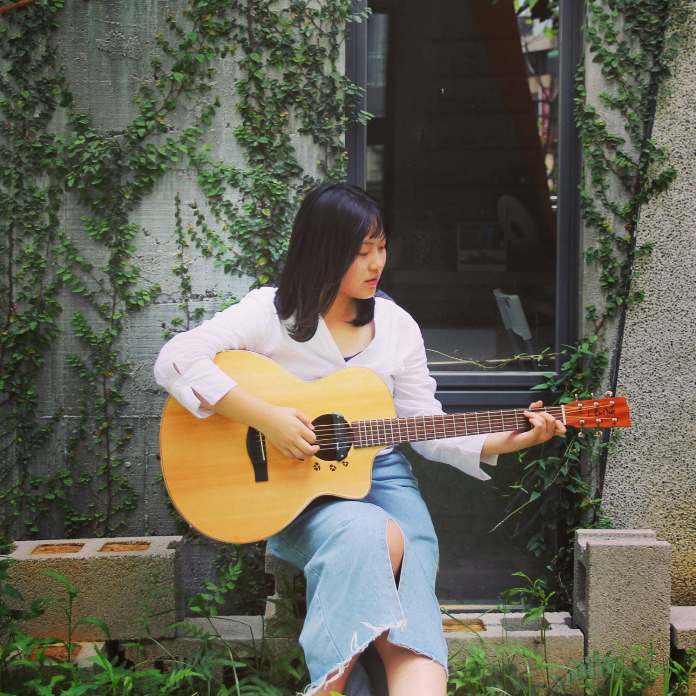
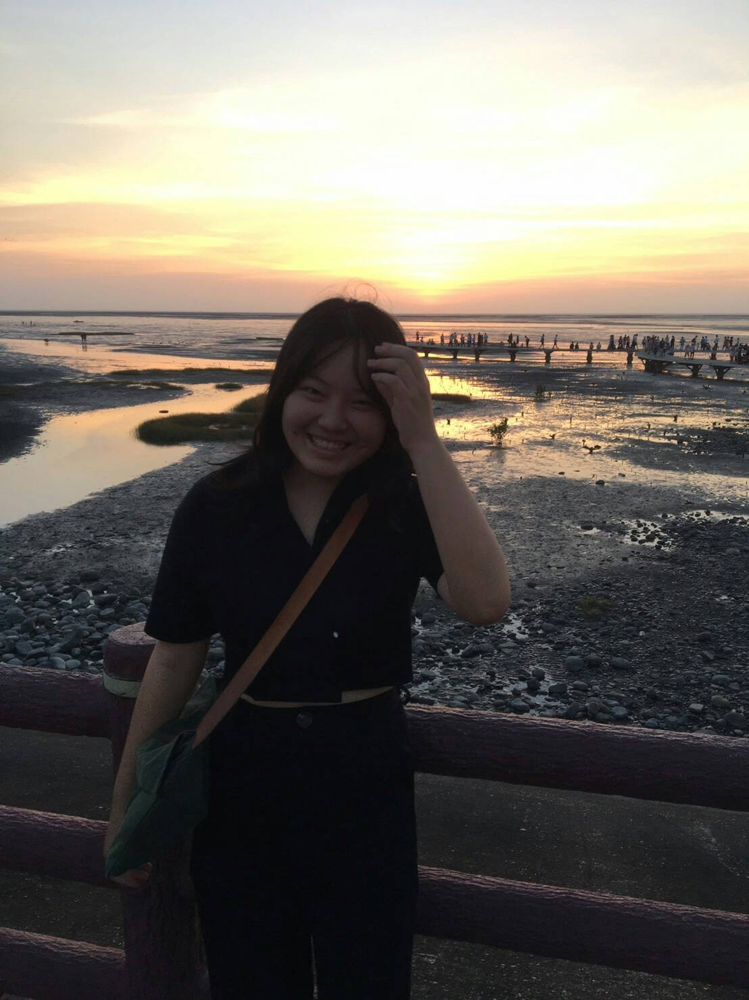

|

|

|

|
| 日期 | 事件 |
|---|---|
| 2001/12/13 郁庭誕生啦!!!! | 郁庭誕生啦!!!!|
| 2009 | 結束從三歲就開始的幼稚園生活邁入小學 |
| 2014 | 國小畢業上國中了~~~ |
| 2016/5/20 | 經歷了人生第一場大考--會考 |
| 2017 | 進入新竹第二志願竹北高中就讀 |
| 2017 | 同年我的工筆畫作品榮獲全國美展水墨畫類佳作 |
| 2018 | 考上了竹北高中吉他社26屆副社長 |
| 2020/01 | 經歷了人生第二場大考--學測 |
| 2020/07 | 同年認為自己能更好，放棄申請入學參戰指考 |
| 2020/09 | 依照指考分發進入高雄大學就讀 |
透過下列方法可以更深入了解我~~~